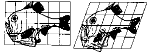

In this new, Don shows how young people can
do matrix transformations

Valorie, age 11, made up a matrix that caused a change (or transformation)
in the shape of a dog, similar to the one D'Arcy Thompson talked about
with fish in his 1917 classic 'On Growth and Form', also shown in
the book 'The Art of Graphics for the IBM PC' written in 1986!
Exciting stuff!
 |
Preface: |
Why transformations and why matrices? |
| A Map to Transformations |
| Chapter 1: |
Plotting points - graphing linear equations |
| Chapter 2: |
Grocery store arithmetic to multiply matrices |
| Chapter 3: |
Steps to do a transformation and a
point-by-point restatement of Valerie's work |
| Chapter 4: |
Questions and other student work |
| Chapter 5: |
Some special matrices |
| Appendix 1: |
Selected answers |
| Appendix 2: |
Transformations without matrices |
| Appendix 3: |
Graph paper to copy |
| Appendix 4: |
Computer programs to do the transformations |
| Appendix 5: |
Bibliography |
| Appendix 6: |
The 81-2x2 matrices using only 1's, 0's or
-1's, and their rules |
 To
order Don's materials
To
order Don's materials